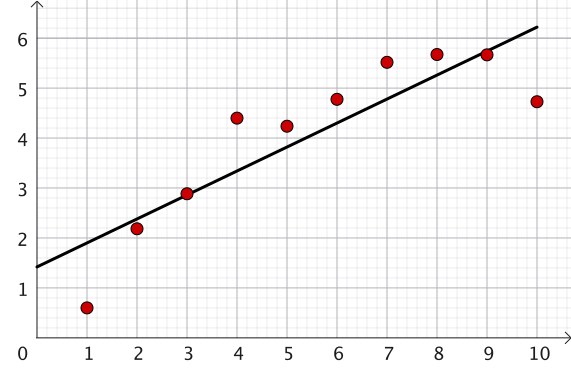
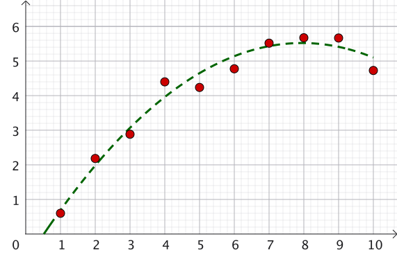

Linear Algebra & Applications
2201NSC
Vector Spaces
Why Factorisation? (Real Numbers)
Prime factorisation is widely used in applications with real numbers:
- LCM: Lowest Common Multiple (e.g., adding fractions)
- HCF: Highest Common Factor (e.g., simplifying/cancelling fractions)
- Simplifying fractions and algebraic expressions
| LCM |
$
\displaystyle \frac{1}{12}+\frac{1}{18}
$
$\ds =\frac{3}{36}+\frac{2}{36}$
$\ds =\frac{5}{36}$
Common denominator: $\operatorname{LCM}(12,18)=36$ |
| HCF |
$
\displaystyle \frac{18}{24}
$
$\ds =\frac{6\times 3}{6\times 4}$
$\ds =\frac{3}{4}$
Common factor $\operatorname{HCF}(18,24)=6$ |
Why Factorisation? (Real Numbers)
Prime factorisation is widely used in applications with real numbers:
- LCM: Lowest Common Multiple (e.g., adding fractions)
- HCF: Highest Common Factor (e.g., simplifying/cancelling fractions)
- Simplifying fractions and algebraic expressions
Key Advantages:
- Simpler, more manageable computational steps
- A well-defined algorithmic process for humans or computers
Factorisation and Matrices
Which matrix structures are particularly convenient to work with?
- Diagonal Matrices: e.g., $\begin{pmatrix}1 & 0 & 0 \\ 0 & 3 & 0 \\ 0 & 0 & 2\end{pmatrix}$ $\Ra \begin{pmatrix}1 & 0 & 0 \\ 0 & 3 & 0 \\ 0 & 0 & 2\end{pmatrix}^n = \begin{pmatrix}1^n & 0 & 0 \\ 0 & 3^n & 0 \\ 0 & 0 & 2^n\end{pmatrix}$
- Upper-Triangular Matrices: e.g., $\begin{pmatrix}1 & 3 & 2 \\ 0 & 0 & 4 \\ 0 & 0 & -2\end{pmatrix}$ $\Ra A^n$ can be computed efficiently
- Lower-Triangular Matrices: e.g., $\begin{pmatrix}0 & 0 & 0 \\ -1 & 3 & 0 \\ 2 & 1 & -1 \\ 5 & 2 & 1\end{pmatrix}$ $\Ra A^n$ can be computed efficiently
- Orthogonal Matrices: Columns satisfy $\mathbf v_i \pd \mathbf v_j = \delta_{ij}$ $\large \Ra A^{-1}=A^T$
Matrix Factorisation Types
Matrix factorisations break a matrix $A$ into product forms of standard matrices.
Conventions:
| Factorisation | Form | Matrix Types |
|---|---|---|
| LU | $\displaystyle A=LU$ | Lower $\times$ Upper |
| QR | $\displaystyle A=QU$ | Orthogonal $\times$ Upper |
| Cholesky | $\displaystyle A=U^TU$ | Transpose $\times$ Upper |
| SVD | $\displaystyle A=Q_n\Sigma Q_m^T$ | Orthogonal $\times$ Diagonal $\times$ Orthogonal |
LU Factorisation: Motivation
Row reduction provides a systematic approach to solving $A\mathbf x = \mathbf b$:
- Perform row operations on the augmented matrix $[A \mid \mathbf b]$.
-
Each operation was represented by pre-multiplication by an elementary matrix $E_i.$
After $k$ steps, the augmented system becomes:
$ \large [E_k \cdots E_1 A \mid E_k \cdots E_1 \mathbf b] $
- Our objective is to convert $A$ into an upper
triangular matrix $U$.
So the resulting system $[U \mid \mathbf r]$ allows straightforward back substitution.
Back-Substitution: Unique Solution
System: $3x_1 + 2x_2 - x_3 = -2,\,$ $3x_1 + x_2 - x_3 = -5,\,$ $3x_1 + 2x_2 + x_3 = 2$
Row reduction to $[U \mid \mathbf r]$:
$ \left( \begin{array}{rrr|r} 3 & 2 & -1 & -2 \\ 3 & 1 & -1 & -5 \\ 3 & 2 & 1 & 2 \end{array} \right) \ $ $ \Rightarrow \left( \begin{array}{rrr|r} 3 & 2 & -1 & -2 \\ \color{red}0 & -1 & 0 & -3 \\ \color{red}0 & \color{red}0 & 2 & 4 \end{array} \right) $
Back-substitution steps:
- $2x_3 = 4 $ $\implies x_3 = 2$
- $-x_2 = -3$ $ \implies x_2 = 3$
- $3x_1 + 2(3) - (2) = -2$ $\implies 3x_1 + 4 = -2$ $ \implies x_1 = -2$
Back-Substitution: Family of Solutions
System: $3x_1 + 2x_2 - x_3 + 2x_4 = -2,\,$ $3x_1 + x_2 - x_3 + x_4 = -5,\,$ $3x_1 + 2x_2 + x_3 + 2x_4 = 2$
Row reduction to $[U \mid \mathbf r]$:
$ \left( \begin{array}{rrrr|r} 3 & 2 & -1 & 2 & -2 \\ 3 & 1 & -1 & 1 & -5 \\ 3 & 2 & 1 & 2 & 2 \end{array} \right) $ $ \Rightarrow \left( \begin{array}{rrrr|r} 3 & 2 & -1 & 2 & -2 \\ \color{red}0 & -1 & 0 & -1 & -3 \\ \color{red}0 & \color{red}0 & 2 & 0 & 4 \end{array} \right) $
Back-substitution steps:
- $2x_3 = 4$ $\implies x_3 = 2$
- $-x_2 - x_4 = -3$ $\implies x_2 = 3 - x_4$
- $3x_1 + 2(3-x_4) - 2 + 2x_4 = -2$ $\implies 3x_1 + 4 = -2$ $\implies x_1 = -2$
Question: What form does $E = E_m \cdots E_1$ take where $U = EA$? 🤔
Back-Substitution: Family of Solutions
Question: What form does $E = E_m \cdots E_1$ take where $U = EA$? 🤔
We have $U = EA$, where $E = E_m \cdots E_1$.
Row operations: $\;\; R_2 \leftarrow R_2-R_1$ $\quad$ $R_3 \leftarrow R_3-R_1$
Corresponding elementary matrices:
$ E_1 = \begin{pmatrix} 1 & 0 & 0 \\ -1 & 1 & 0 \\ 0 & 0 & 1 \end{pmatrix}, \qquad E_2 = \begin{pmatrix} 1 & 0 & 0 \\ 0 & 1 & 0 \\ -1 & 0 & 1 \end{pmatrix} $
Then $\, E = E_2E_1 = \begin{pmatrix} 1 & \color{red}0 & \color{red}0 \\ -1 & 1 & \color{red}0 \\ -1 & 0 & 1 \end{pmatrix}. $ Therefore, $\,\boxed{U=EA}$
Notice: $E$ is lower triangular.
When Does $A = LU$ Hold?
$A = LU$ holds directly if row reduction requires no row swaps.
To understand this let's write: $ U = EA $ $=\begin{pmatrix} E_{11} & \cdots & E_{1n} \\ E_{21} & \cdots & E_{2n} \\ \vdots & \ddots & \vdots \\ E_{n1} & \cdots & E_{nn} \end{pmatrix} \begin{pmatrix} \;- \;\;\vec{\mathbf a}_1\;-\;\\ \;- \;\;\vec{\mathbf a}_2 \;-\;\\ \vdots \\ \;- \;\; \vec{\mathbf a}_n\;-\; \end{pmatrix} $
If $A = E^{-1} U$, then $E^{-1}$ must be lower-triangular, and $E$ is lower-triangular.
Then $E_{ij}=0\,$ if $\,j\gt i.$ That is, $\, U = EA = \left(\begin{array}{l} E_{11}\vec{a}_1 \\ E_{21}\vec{a}_1 + E_{22}\vec{a}_2 \\\;\; \quad \quad\vdots \\ E_{n1}\vec{a}_1 + \dots + E_{nn}\vec{a}_n\end{array}\right) $
This occurs if and only if the row reduction process uses no row swaps. In that case, $L = E^{-1}$ and $A = LU$.
Row Reduction Without Swaps
| Start: |
$
A=
\left(
\begin{array}{cccc}
a_{11}&a_{12}&a_{13}&a_{14}\\
a_{21}&a_{22}&a_{23}&a_{24}\\
a_{31}&a_{32}&a_{33}&a_{34}\\
a_{41}&a_{42}&a_{43}&a_{44}
\end{array}
\right)
$
$
\overbrace{
\left(
\begin{array}{cccc}
1&0&0&0\\
0&1&0&0\\
0&0&1&0\\
0&0&0&1
\end{array}
\right)}^{\Large I}
\overbrace{
\left(
\begin{array}{cccc}
a_{11}&a_{12}&a_{13}&a_{14}\\
a_{21}&a_{22}&a_{23}&a_{24}\\
a_{31}&a_{32}&a_{33}&a_{34}\\
a_{41}&a_{42}&a_{43}&a_{44}
\end{array}
\right)}^{\Large A}
$
|
|
Step 1: No row swaps |
$ \left( \begin{array}{cccc} 1&0&0&0\\ \color{red}{E_{21}}&1&0&0\\ \color{red}{E_{31}}&0&1&0\\ \color{red}{E_{41}}&0&0&1 \end{array} \right) \left( \begin{array}{cccc} a_{11}&a_{12}&a_{13}&a_{14}\\ \color{red}{0}&\color{blue}{b_{22}}&\color{blue}{b_{23}}&\color{blue}{b_{24}}\\ \color{red}{0}&\color{blue}{b_{32}}&\color{blue}{b_{33}}&\color{blue}{b_{34}}\\ \color{red}{0}&\color{blue}{b_{42}}&\color{blue}{b_{43}}&\color{blue}{b_{44}} \end{array} \right) $ |
|
Step 2: No row swaps |
$ \left( \begin{array}{cccc} 1&0&0&0\\ \color{red}{E_{21}}&1&0&0\\ \color{red}{E_{31}}&\color{red}{E_{32}}&1&0\\ \color{red}{E_{41}}&\color{red}{E_{42}}&0&1 \end{array} \right) \left( \begin{array}{cccc} a_{11}&a_{12}&a_{13}&a_{14}\\ \color{red}{0}&\color{blue}{b_{22}}&\color{blue}{b_{23}}&\color{blue}{b_{24}}\\ \color{red}{0}&\color{red}{0}&\color{blue}{c_{33}}&\color{blue}{c_{34}}\\ \color{red}{0}&\color{red}{0}&\color{blue}{c_{43}}&\color{blue}{c_{44}} \end{array} \right) $ |
Row Reduction Without Swaps
| Start | $ \overbrace{ \left( \begin{array}{cccc} 1&0&0&0\\ 0&1&0&0\\ 0&0&1&0\\ 0&0&0&1 \end{array} \right)}^{\Large I} \overbrace{ \left( \begin{array}{cccc} a_{11}&a_{12}&a_{13}&a_{14}\\ a_{21}&a_{22}&a_{23}&a_{24}\\ a_{31}&a_{32}&a_{33}&a_{34}\\ a_{41}&a_{42}&a_{43}&a_{44} \end{array} \right)}^{\Large A} $ |
|
Step 1 No row swaps |
$ \left( \begin{array}{cccc} 1&0&0&0\\ \color{red}{E_{21}}&1&0&0\\ \color{red}{E_{31}}&0&1&0\\ \color{red}{E_{41}}&0&0&1 \end{array} \right) \left( \begin{array}{cccc} a_{11}&a_{12}&a_{13}&a_{14}\\ \color{red}{0}&\color{blue}{b_{22}}&\color{blue}{b_{23}}&\color{blue}{b_{24}}\\ \color{red}{0}&\color{blue}{b_{32}}&\color{blue}{b_{33}}&\color{blue}{b_{34}}\\ \color{red}{0}&\color{blue}{b_{42}}&\color{blue}{b_{43}}&\color{blue}{b_{44}} \end{array} \right) $ |
|
Step 2 No row swaps |
$ \left( \begin{array}{cccc} 1&0&0&0\\ \color{red}{E_{21}}&1&0&0\\ \color{red}{E_{31}}&\color{red}{E_{32}}&1&0\\ \color{red}{E_{41}}&\color{red}{E_{42}}&0&1 \end{array} \right) \left( \begin{array}{cccc} a_{11}&a_{12}&a_{13}&a_{14}\\ \color{red}{0}&\color{blue}{b_{22}}&\color{blue}{b_{23}}&\color{blue}{b_{24}}\\ \color{red}{0}&\color{red}{0}&\color{blue}{c_{33}}&\color{blue}{c_{34}}\\ \color{red}{0}&\color{red}{0}&\color{blue}{c_{43}}&\color{blue}{c_{44}} \end{array} \right) $ |
| Finally | $ \left( \begin{array}{cccc} 1&0&0&0\\ \color{red}{E_{21}}&1&0&0\\ \color{red}{E_{31}}&\color{red}{E_{32}}&1&0\\ \color{red}{E_{41}}&\color{red}{E_{42}}&\color{red}{E_{43}}&1 \end{array} \right) \left( \begin{array}{cccc} a_{11}&a_{12}&a_{13}&a_{14}\\ \color{red}{0}&\color{blue}{b_{22}}&\color{blue}{b_{23}}&\color{blue}{b_{24}}\\ \color{red}{0}&\color{red}{0}&\color{blue}{c_{33}}&\color{blue}{c_{34}}\\ \color{red}{0}&\color{red}{0}&\color{red}{0}&\color{blue}{d_{44}} \end{array} \right) $ |
Row Reduction Without Swaps
| Initial matrix | $A= \left( \begin{array}{cccc} a_{11}&a_{12}&a_{13}&a_{14}\\ a_{21}&a_{22}&a_{23}&a_{24}\\ a_{31}&a_{32}&a_{33}&a_{34}\\ a_{41}&a_{42}&a_{43}&a_{44} \end{array} \right) $ |
|
After row reduction |
$
\left(
\begin{array}{cccc}
1&0&0&0\\
\color{red}{E_{21}}&1&0&0\\
\color{red}{E_{31}}&\color{red}{E_{32}}&1&0\\
\color{red}{E_{41}}&\color{red}{E_{42}}&\color{red}{E_{43}}&1
\end{array}
\right)
\left(
\begin{array}{cccc}
a_{11}&a_{12}&a_{13}&a_{14}\\
\color{red}{0}&\color{blue}{b_{22}}&\color{blue}{b_{23}}&\color{blue}{b_{24}}\\
\color{red}{0}&\color{red}{0}&\color{blue}{c_{33}}&\color{blue}{c_{34}}\\
\color{red}{0}&\color{red}{0}&\color{red}{0}&\color{blue}{d_{44}}
\end{array}
\right)
\quad \quad\;\;
$
$
\underbrace{
\left(
\begin{array}{cccc}
1&0&0&0\\
\color{red}{E_{21}}&1&0&0\\
\color{red}{E_{31}}&\color{red}{E_{32}}&1&0\\
\color{red}{E_{41}}&\color{red}{E_{42}}&\color{red}{E_{43}}&1
\end{array}
\right)
\left(
\begin{array}{cccc}
a_{11}&a_{12}&a_{13}&a_{14}\\
\color{red}{0}&\color{blue}{b_{22}}&\color{blue}{b_{23}}&\color{blue}{b_{24}}\\
\color{red}{0}&\color{red}{0}&\color{blue}{c_{33}}&\color{blue}{c_{34}}\\
\color{red}{0}&\color{red}{0}&\color{red}{0}&\color{blue}{d_{44}}
\end{array}
\right)
}_{\Large EA}
$
$\Large = U$
|
| Rearrange | $ \Large A=E^{-1}U $ $ \Large =LU $ |
$L$ is a unit lower-triangular matrix (with 1s on the diagonal),
and $U$ is an upper-triangular matrix.
During each step of row reduction, we use a pivot row
— the row we use to set the entries below the pivot to 0.
Ideally, we use the first row as the first pivot,
the second row as the second pivot, etc.
If we cannot do this because the pivot entry is zero,
we swap rows.
PLU Factorisation & Permutations
If zero pivots occur, row swaps are required. We represent row swaps via a permutation matrix $P$.
Theorem: Any matrix $A$ can be written as $A = PLU$, where $L$ is lower-triangular, $U$ is upper-triangular, and $P$ is a permutation matrix.
Properties of Permutation Matrices $P$:
-
They are square matrices with exactly one 1 per row and column
(0s elsewhere).
e.g., $\; P = \begin{pmatrix} 0 & 1 \\ 1 & 0 \end{pmatrix}\;\; $ or $\;\; P = \begin{pmatrix} 0 & 1 & 0 \\ 1 & 0 & 0 \\ 0 & 0 & 1 \\ \end{pmatrix} $
- Determinant is $\det(P) = \pm 1.$
- $P^m = I$ for some integer $m$.
- $P^{-1} = P^T$ is also a permutation matrix.
Uniqueness of PLU Factorisation
Is there only one $PLU$ factorisation for a given matrix, or are there many?
The RREF of a matrix is unique, but a standard $PLU$ factorisation is generally not unique due to scaling ambiguities.
To guarantee uniqueness, we impose suitable normalisation and pivoting conventions.
In particular, we require the lower-triangular factor to have $1$s along its main diagonal.
$\displaystyle L'= \begin{pmatrix} 1 & 0 & 0\\ * & 1 & 0\\ * & * & 1 \end{pmatrix} $
$L'$ is called unit lower-triangular.
Unique $PL'DU$ Factorisation
Under fixed row-reduction and pivoting conventions, we obtain
$\boxed{A=PL'DU}$
- $P$: permutation matrix
- $L'$: unit lower-triangular matrix
- $D$: diagonal matrix containing scaling values
- $U$: row-echelon form with $1$s on pivot entries
The original lower-triangular factor $L$ is recovered from
$\boxed{L=L'D}$
Therefore, $\;A=PLU=PL'DU$
This normalisation removes scaling ambiguity to give a unique factorisation.
LU Factorisation in Octave / MATLAB
[L, U, P] = lu(A)
returns
the $L,$ $U$ and $P$ components of the
$PLU$ factorisation.
>> A = [4 5 0; 2 5 2; 0 5 4];
>> [L, U, P] = lu(A)
L =
1.0000 0 0
0 1.0000 0
0.5000 0.0005 1.0000
U =
4 5 0
0 5 4
0 0 0
P =
1 0 0
0 0 1
0 1 0
Note: Omitting P (e.g., [L,U] = lu(A))
merges $P$ into $L$,
which may result in $L$ not being strictly lower-triangular.
QR Factorisation: Column Space View
Consider the system of linear equations:
The system $A\mathbf x = \mathbf b$ can be written in matrix form on the left side:
The system $A\mathbf x = \mathbf b$ represents a linear combination of columns:
$ A \mathbf x = \mathbf b$
$\ds \left( \begin{array}{cccc} | & | & & | \\ \mathbf a_1 & \mathbf a_2& \cdots &\mathbf a_n \\ | & | & & | \\ \end{array} \right) \left( \begin{array}{c} x_1 \\ x_2 \\ \vdots \\ x_n \\ \end{array} \right)= \mathbf b$
$x_1 \mathbf a_1 + x_2 \mathbf a_2 + \dots + x_n \mathbf a_n = \mathbf b$
Solvability conditions:
- If $\mathbf b \notin \text{Col}(A) \implies$ No solution
- If $\mathbf b \in \text{Col}(A) \implies$ At least one solution
- If $\text{Null}(A) \neq \{\mathbf 0\} \implies$ Infinite family of solutions
Benefits of Orthogonal Bases
$x_1 \mathbf a_1 + x_2 \mathbf a_2 + \dots + x_n \mathbf a_n = \mathbf b$
If column vectors $\mathbf a_i$ are orthonormal ($\mathbf a_i \pd \mathbf a_j = \delta_{ij}$), finding coefficients $x_j$ is trivial:
$ \mathbf a_j \pd \mathbf b $ $= \mathbf a_j \pd (x_1 \mathbf a_1 + x_2 \mathbf a_2 + \dots + x_n \mathbf a_n)\qquad \qquad \qquad\qquad \qquad$
$= x_1 (\mathbf a_j \pd \mathbf a_1) + \dots + x_j (\mathbf a_j \pd \mathbf a_j) + \dots + x_n(\mathbf a_j \pd \mathbf a_n)$ $= x_j$
since $\;\mathbf a_i \pd \mathbf a_j= \delta_{ij} \begin{cases} 0 \;\;\text{if }\, i\neq j \\ 1 \;\;\text{if }\, i=j \end{cases} $
Alternatively, we can solve $A \mathbf x = \mathbf b $ if $A$ is orthogonal ($A^T A = I$):
$ \mathbf x = I \mathbf x $ $= \left(A^T A\right) \mathbf x$ $= A^T\left( A\mathbf x\right) $ $= A^T \mathbf b $ $\Ra x_j= \mathbf a_j \pd \mathbf b$
Gram-Schmidt Orthogonalisation
Given vectors $\mathbf a_1,\mathbf a_2,\ldots,\mathbf a_n$, construct an orthonormal set $\{\hat{\mathbf v}_1,\hat{\mathbf v}_2,\ldots\}$ with the same span.
- Start with $\mathbf v_1=\mathbf a_1$, then normalise: $\displaystyle \mathbf{\hat v}_1= \frac{\mathbf v_1}{\|\mathbf v_1\|}$.
-
Remove the component of $\mathbf a_2$ in the
$\hat{\mathbf v}_1$ direction
$ \mathbf v_2 =\mathbf a_2- (\mathbf a_2\pd\hat{\mathbf v}_1)\hat{\mathbf v}_1,\; $ then normalise: $\displaystyle \mathbf{\hat v}_2= \frac{\mathbf v_2}{\|\mathbf v_2\|}.$
-
Remove the components of $\mathbf a_3$ in the
$\hat{\mathbf v}_1$ and $\hat{\mathbf v}_2$ directions:
$ \mathbf v_3 =\mathbf a_3 $ $-\,(\mathbf a_3\pd\hat{\mathbf v}_1)\hat{\mathbf v}_1 -(\mathbf a_3\pd\hat{\mathbf v}_2)\hat{\mathbf v}_2,\,$ then normalise: $\displaystyle \mathbf{\hat v}_3= \frac{\mathbf v_3}{\|\mathbf v_3\|}.$
- Continue in this fashion: $ \ds \mathbf v_m =\mathbf a_m- \sum_{i=1}^{m-1} (\mathbf a_m\pd\hat{\mathbf v}_i)\hat{\mathbf v}_i\, $ and $\, \mathbf{\hat v}_m= \dfrac{\mathbf v_m}{\|\mathbf v_m\|}. $
Remark: If $\mathbf v_m=\mathbf 0$, skip this vector. This occurs when $\mathbf a_m$ is linearly dependent on the preceding vectors.
Gram-Schmidt: Preserving the Span
At each step, $\mathbf v_m$ is constructed from $\mathbf a_m$ and the previous $\hat{\mathbf v}_i$'s.
- $\mathbf v_1=\mathbf a_1$ $\Longrightarrow \mathbf v_1\in\operatorname{span}\{\mathbf a_1\}$
-
$\mathbf v_2
=\mathbf a_2-
(\mathbf a_2\pd\hat{\mathbf v}_1)\hat{\mathbf v}_1$
$=\mathbf a_2- \left(\mathbf a_2\pd \dfrac{\mathbf a_1}{||\mathbf a_1 ||}\right)
\dfrac{\mathbf a_1}{||\mathbf a_1 ||}$
$
=- \left( \dfrac{\mathbf a_2 \pd \mathbf a_1}{||\mathbf a_1 ||^2}\right) \mathbf a_1
+ \mathbf a_2
$
$\quad \Ra \mathbf v_2\in \operatorname{span}\{\mathbf a_1,\mathbf a_2\}$
-
$\mathbf v_3
=\mathbf a_3-
(\mathbf a_3\cdot\hat{\mathbf v}_1)\hat{\mathbf v}_1
-(\mathbf a_3\cdot\hat{\mathbf v}_2)\hat{\mathbf v}_2$
$
=
c_1\mathbf a_1+c_2\mathbf a_2+\mathbf a_3\,$
for some $\,c_1,c_2\in\mathbb R$
$\quad\Ra \mathbf v_3\in \operatorname{span}\{\mathbf a_1,\mathbf a_2,\mathbf a_3\}$
In general, $ \mathbf v_m \in \operatorname{span} \{\mathbf a_1,\ldots,\mathbf a_m\}. $ Since each $\mathbf a_m$ can also be written in terms of $\mathbf v_1,\ldots,\mathbf v_m,$
$ \operatorname{span} \{\mathbf v_1,\ldots,\mathbf v_m\} = \operatorname{span} \{\mathbf a_1,\ldots,\mathbf a_m\} $
$ \boxed{ \operatorname{span} \{\hat{\mathbf v}_1,\ldots,\hat{\mathbf v}_m\} = \operatorname{span} \{\mathbf a_1,\ldots,\mathbf a_m\} } $
Normalising does not change the span!
QR Factorisation: Basis Construction
$ \boxed{ \operatorname{span} \{\hat{\mathbf v}_1,\ldots,\hat{\mathbf v}_m\} = \operatorname{span} \{\mathbf a_1,\ldots,\mathbf a_m\} } $
The Gram-Schmidt vectors $\hat{\mathbf v}_j$ can
be expressed as linear combinations
of $\mathbf a_i.$
Using block matrices we can write the linear combinations as follows:
$ \begin{pmatrix} | & | & | \\ \hat{\mathbf v}_1 & \hat{\mathbf v}_2 & \hat{\mathbf v}_3 & \dots \\ | & | & | \end{pmatrix} = \begin{pmatrix} | &| & | & \\ c_{11} \mathbf a_1 & c_{12} \mathbf a_1 + c_{22} \mathbf a_2 & c_{13} \mathbf a_1 + c_{23} \mathbf a_2 + c_{33} \mathbf a_3 & \cdots \\ | & | & | & \end{pmatrix} $
$ \begin{pmatrix} | & | & | \\ \hat{\mathbf v}_1 & \hat{\mathbf v}_2 & \hat{\mathbf v}_3 & \dots \\ | & | & | \end{pmatrix} = \begin{pmatrix} | & | & | \\ \mathbf a_1 & \mathbf a_2 & \mathbf a_3 & \dots \\ | & | & | \end{pmatrix} \begin{pmatrix} c_{11} & c_{12} & c_{13} & \dots \\ 0 & c_{22} & c_{23} & \dots \\ 0 & 0 & c_{33} & \dots \\ \vdots & \vdots & \vdots & \ddots \end{pmatrix} $
In matrix notation:$$\Large Q = AC $$ where $Q$ has orthonormal columns and $C$ is an upper-triangular matrix.
Deriving the QR Form
$ \begin{pmatrix} | & | & | \\ \hat{\mathbf v}_1 & \hat{\mathbf v}_2 & \hat{\mathbf v}_3 & \dots \\ | & | & | \end{pmatrix} = \begin{pmatrix} | & | & | \\ \mathbf a_1 & \mathbf a_2 & \mathbf a_3 & \dots \\ | & | & | \end{pmatrix} \begin{pmatrix} c_{11} & c_{12} & c_{13} & \dots \\ 0 & c_{22} & c_{23} & \dots \\ 0 & 0 & c_{33} & \dots \\ \vdots & \vdots & \vdots & \ddots \end{pmatrix} $
From the Gram-Schmidt relation, $Q = AC$ where $C$ is upper-triangular.
- If $C$ is invertible, its inverse $C^{-1}$ is also upper-triangular.
-
Rearranging $Q = AC$ gives:
$ \large A = Q C^{-1} $ $ \large = Q U $
where $U = C^{-1}$ is an upper-triangular matrix.
Note: In general proofs of QR factorisation, $C$ does not strictly need to be invertible.
The QR Factorisation Theorem
Theorem (QR Factorisation): Any $m\times n$ matrix $A$ can be factorised as: $$ A = QU \quad (\text{or } A = QR) $$ where $Q$ is an orthogonal matrix and $U$ (or $R$) is upper-triangular.
Remark: It is called the QR factorisation because $R$ is a commonly used (but less obvious) symbol for the upper-triangular matrix
Non-Uniqueness of QR Factorisation:
The QR factorisation is not unique because multiple orthonormal bases can span the same space.
The QR Factorisation Theorem
Non-Uniqueness of QR Factorisation:
The QR factorisation is not unique because multiple orthonormal bases can span the same space.
Example in $\mathbb{R}^3$: For any angle $\theta$,
$$ \left\{\begin{pmatrix}\cos\theta \\ \sin\theta \\ 0\end{pmatrix}, \begin{pmatrix}-\sin\theta \\ \cos\theta \\ 0\end{pmatrix}, \begin{pmatrix}0 \\ 0 \\ 1\end{pmatrix}\right\} $$forms a valid orthonormal basis.
Calculating QR in Octave / MATLAB
Command: [Q, U] = qr(A)
|
|
👉 This works for square matrices $A\in \R^{n\times n}$
From Full QR to Thin QR
Let $A\in\mathbb{R}^{m\times n}$ with $m>n$.
$ A = QR $ $= \begin{bmatrix} Q_{mn} & Q_{\mathrm{rest}} \end{bmatrix} \begin{bmatrix} R_n\\ 0 \end{bmatrix}$
$ \underbrace{Q_{mn}}_{m\times n} \qquad $ $\underbrace{Q_{\mathrm{rest}}}_{m\times(m-n)} \qquad $ $ \underbrace{R_n}_{n\times n} \qquad $ $ \underbrace{0}_{(m-n)\times n}$
The Reduced/Thin QR Factorisation
$ A = QR $ $= \begin{bmatrix} Q_{mn} & Q_{\mathrm{rest}} \end{bmatrix} \begin{bmatrix} R_n\\ 0 \end{bmatrix}$
We can remove the redundant parts:
$\large A = Q_{mn} R_n$ $ {\large =} \begin{pmatrix} \vert & & \vert\\ \mathbf q_1 & \cdots & \mathbf q_n\\ \vert & & \vert \end{pmatrix} \, \begin{pmatrix} r_{11} & \cdots & r_{1n}\\ 0 & \ddots & \vdots\\ \vdots & \ddots & r_{nn} \end{pmatrix}$
This is the Reduced QR factorisation of $A$
(also known as Thin QR
factorisation).
Calculating Reduced/Thin QR in Octave / MATLAB
>> A = [ 3 3 3 ; 2 1 2 ; -1 -1 1 ; 2 -3 1 ]>> [Q, R] = qr(A, 0) % Reduced QR/Thin QRQ =
-0.707107 0.471405 -0.208758
-0.471405 0.078567 -0.205595
0.235702 -0.157135 -0.955228
-0.471405 -0.864242 0.041119
R =
-4.2426 -1.4142 -3.2998
0 4.2426 0.5500
0 0 -1.9516Least-Squares via QR Factorisation
Minimize $\|\mathbf y - X\mathbf k\|^2$. Standard normal equation solution:
$\mathbf k_0 = \left(X^T X\right)^{-1} X^T \mathbf y $
Substitute $X = QU$ and use $Q^T Q = I$:
$ \mathbf k_0 = \left(\left(QU\right)^T \left(QU\right)\right)^{-1} \left(QU\right)^T \mathbf y\; $ $= \left(U^T Q^T Q U\right)^{-1} U^T Q^T \mathbf y $
$ = \left(U^T U\right)^{-1} U^T Q^T \mathbf y $ $ = U^{-1} \left(U^T\right)^{-1} U^T Q^T \mathbf y \qquad\quad $
$ = U^{-1} Q^T \mathbf y\qquad \qquad\qquad\qquad\qquad\qquad\qquad\;\;$
Using QR factorisation simplifies least-squares into an elegant, computationally stable form!

Least-Squares in Practice: Line of Best Fit
Fit $y = mx + c$ for data points $x_i = 1, \dots, 10$:
| xi | 1 | 2 | 3 | 4 | 5 | 6 | 7 | 8 | 9 | 10 |
|---|---|---|---|---|---|---|---|---|---|---|
| yi | 0.6 | 2.1837 | 2.8844 | 4.3985 | 4.2369 | 4.7755 | 5.5160 | 5.6721 | 5.6654 | 4.7268 |
$\mathbf y= \begin{pmatrix} 0.6 \\ 2.1837 \\ \vdots \\ 4.7268 \end{pmatrix}$ $= \begin{pmatrix} m(1) + c \\ m(2)+c \\ \vdots \\ m(10)+c \end{pmatrix} $ $= \underbrace{\begin{pmatrix} 1 & 1 \\ 2 & 1 \\ \vdots &\vdots\\ 10 & 1 \end{pmatrix}}_{X} \underbrace{\begin{pmatrix} m \\ c \end{pmatrix}}_{\mathbf k} $ $\;\Ra\; X = \begin{pmatrix}1 & 1 \\ 2 & 1 \\ \vdots & \vdots \\ 10 & 1\end{pmatrix} $ $=QU $
$\;\Ra\; \mathbf k_0 = U^{-1} Q^T \mathbf y $
How do we compute $Q$ and $U$? 🤔
Reduced/Thin QR factorisation with Octave / MATLAB
We can use the assistance of the computer in this case! 😃💻
>> X = [1 1; 2 1; 3 1; 4 1; 5 1; 6 1; 7 1; 8 1; 9 1;10 1];>> [Q, U] = qr(X, 0) % Reduced/Thin QRQ =
-5.0965e-02 -5.8554e-01
-1.0193e-01 -4.8795e-01
-1.5289e-01 -3.9036e-01
-2.0386e-01 -2.9277e-01
-2.5482e-01 -1.9518e-01
-3.0579e-01 -9.7590e-02
-3.5675e-01 -5.5511e-17
-4.0772e-01 9.7590e-02
-4.5868e-01 1.9518e-01
-5.0965e-01 2.9277e-01
U =
-19.6214 -2.8031
0 -1.4639Least-Squares Practice: Line of Best Fit
Fit $y = mx + c$ for data points $x_i = 1, \dots, 10$:
| xi | 1 | 2 | 3 | 4 | 5 | 6 | 7 | 8 | 9 | 10 |
|---|---|---|---|---|---|---|---|---|---|---|
| yi | 0.6 | 2.1837 | 2.8844 | 4.3985 | 4.2369 | 4.7755 | 5.5160 | 5.6721 | 5.6654 | 4.7268 |
$\;Q = $ $ \begin{pmatrix} -0.050965 & -0.58554\\ -0.10193 & -0.48795\\ -0.15289 & -0.39036\\ -0.20386 & -0.29277\\ -0.25482 & -0.19518\\ -0.30579 & -0.097590\\ -0.35675 & 0\\ -0.40772 & 0.097590\\ -0.45868 & 0.19518\\ -0.50965 & 0.29277 \end{pmatrix} $ $,$ $\; U = \begin{pmatrix}-19.6214 & -2.8031 \\ 0 & -1.4639\end{pmatrix}$ $,$ $\; \mathbf y= $ $ \begin{pmatrix} 0.6 \\ 2.1837 \\2.8844 \\4.3985 \\4.2369 \\4.7755\\5.5160\\ 5.6721\\ 5.6654 \\ 4.7268 \end{pmatrix}\, $
👉 $\; \mathbf k_0= U^{-1} Q^T \mathbf y $
Linear Fit: Solving for $m$ and $c$
Computing coefficient vector
$ \mathbf k_0= U^{-1} Q^T \mathbf y $ $ \approx \begin{pmatrix} 0.48 \\ 1.42 \end{pmatrix} $
Line of best fit: $y = 0.48x + 1.42$

Least-Squares Practice: Quadratic Fit
We can use the same QR approach to fit $y=ax^2+bx+c$ to the data.
| xi | 1 | 2 | 3 | 4 | 5 | 6 | 7 | 8 | 9 | 10 |
|---|---|---|---|---|---|---|---|---|---|---|
| yi | 0.6 | 2.1837 | 2.8844 | 4.3985 | 4.2369 | 4.7755 | 5.5160 | 5.6721 | 5.6654 | 4.7268 |
Define $ X= \begin{pmatrix} 1^2&1&1\\ 2^2&2&1\\ \vdots&\vdots&\vdots\\ 10^2&10&1 \end{pmatrix}, $ and $ \mathbf k= \begin{pmatrix} a\\b\\c \end{pmatrix}. $
Using the reduced QR factorisation $ X=QU, $ we just need to compute $$ \mathbf k_{0} = U^{-1}Q^T\mathbf y . $$
💡 The same process works for polynomial fits of any degree.
Quadratic Best Fit: Solution
For $ y=ax^2+bx+c,\, $ we have $\; \begin{pmatrix} a\\b\\c \end{pmatrix} \approx \begin{pmatrix} -0.1011\\ 1.5930\\ -0.8030 \end{pmatrix}. $
Quadratic fit: $y=-0.1011x^2+1.5930x-0.8030$

Cholesky Factorisation
If the matrix A is a real, symmetric, positive-definite matrix, then it admits a particularly useful factorisation:
Theorem: Any real, symmetric, positive-definite matrix $A$ can be factorised as:
$ A = U^T U\quad $ or equivalently $\quad A = L L^T $
where $U$ is upper-triangular and $L = U^T$ is lower-triangular.
Proof Outline:
- Diagonalise $A = V D V^T$ with orthogonal $V$. Positive-definiteness implies eigenvalues $D_i > 0$.
- Define diagonal $S = D^{1/2},$ so $D = S^2 $ $ = S S^T $ $ \Ra A = V S S^T V^T $ $ =\left(VS\right)\left(VS\right)^T.$
-
Apply QR factorisation to $\left(VS\right)^T$
$= QU $
$\quad \implies A = \left(QU\right)^T \left(QU\right) $ $ = U^T Q^T Q U $ $ = U^T U.$
Calculating Cholesky Factorisation Octave / MATLAB
Command: U = chol(A)
>> A = [4 3 2; 3 6 3; 2 3 4];
>> U = chol(A)U =
2.0000 1.5000 1.0000
0 1.9365 0.7746
0 0 1.5492>> U' * U % Reconstructs original matrix Aans =
4 3 2
3 6 3
2 3 4Application: Solving Linear Systems
Cholesky factorisation provides an efficient way to solve linear systems $A\mathbf{x}=\mathbf{b}$ when $A$ is symmetric positive-definite.
Since $A=LL^T$, we can write:
Both systems are triangular, so they can be solved efficiently using forward and back substitution.
Summary of QR Factorisation
Theorem: Any real $m\times n$ matrix $A$ can be factorised as $A=QU$ (or $A=QR$), where $Q$ is orthogonal and $U$ is upper-triangular.
Key Properties & Advantages:
- Directly related to the column space of $A$.
- Provides an explicit orthonormal basis for the column space.
- Highly advantageous for regression and least-squares problems.
- Offers superior numerical stability compared to standard LU decomposition.
Singular Value Decomposition (SVD)
Theorem: Any matrix $A \in \mathbb{R}^{m \times n}$ can be written as:
$ \qquad A = Q_m \,\Sigma\, Q_n^T $ $=U\,\Sigma \,V^T$
where $Q_m$ ($m \times m$) and $Q_n$ ($n \times n$) are orthogonal matrices, and $\Sigma$ is an $m \times n$ rectangular diagonal matrix with non-negative real entries.
Notation Warning: SVD is often written as
$A = U\,\Sigma \,V^T.$
- Here, $U$ and $V$ denote orthogonal matrices;
- $U$ does NOT denote the upper-triangular matrix from QR factorisation.
Singular Value Decomposition (SVD)
Theorem: Any matrix $A \in \mathbb{R}^{m \times n}$ can be written as:
$ A = Q_m \,\Sigma\, Q_n^T $ $=U\,\Sigma \,V^T$
where $Q_m$ ($m \times m$) and $Q_n$ ($n \times n$) are orthogonal matrices, and $\Sigma$ is an $m \times n$ rectangular diagonal matrix with non-negative real entries.
Recall: The eigen-decomposition theorem states that
$A = V\,D \,V^{-1},\;\;$ $A\in\R^{n\times n}$
- Here, $V$ is composed of the eigenvectors;
- $D$ is the diagonal matrix of eigenvalues.
Singular Value Decomposition (SVD)
$ A = Q_m \,\Sigma\, Q_n^T $ $=U\,\Sigma \,V^T$
$A = V\,D \,V^{-1},\;\;$ $A\in\R^{n\times n}$
Are these two factorisations related?

Example 1: Calculating SVD in Octave / MATLAB
For $A = \begin{pmatrix}4 & -2 \\ 1 &
1\end{pmatrix}.\;$
Command: [U, S, V] = svd(A)
|
SVD factoristion |
Eigenvalues & Eigenvectors of $A$ |
There is generally no direct connection between the eigenvalues & eigenvectors of $A$ and its singular values! 🤔
💡 Let's compute the eigenvalues & eigenvectors of $AA^T$ and $A^TA\;\;$
Comparing SVD components with $AA^T$ and $A^TA$ eigensystems
Eigenvalues & Eigenvectors
|
SVD factoristion |
$AA^T$ 👆 |
$A^TA$ |
Left matrix $U$: Columns of $U$ are the eigenvectors of $A A^T$.
Comparing SVD components with $AA^T$ and $A^TA$ eigensystems
Eigenvalues & Eigenvectors
|
SVD factoristion |
$AA^T$ |
$A^TA$ |
Singular Values $\Sigma$: Square roots of the eigenvalues of $A A^T$ and $A A^T$.
$ \begin{pmatrix}\sqrt{\lambda_1} & 0 \\ 0 & \sqrt{\lambda_2}\end{pmatrix}$ $ = \begin{pmatrix}\sqrt{1.7805} & 0 \\ 0 & \sqrt{20.2195}\end{pmatrix} $ $ = \begin{pmatrix}1.3343 & 0 \\ 0 & 4.4966\end{pmatrix} = \Sigma $
Comparing SVD components with $A^T A$ and $A A^T$ eigensystems
Eigenvalues & Eigenvectors
|
SVD factoristion |
$AA^T$ |
$A^TA$ 👆 |
Right matrix $V$: Columns of $V$ are the eigenvectors of $A^T A$.
Comparing SVD components with $A^T A$ and $A A^T$ eigensystems
$A =\color{red}{Q_m}\color{darkgreen}{\Sigma} \color{blue}{Q_n}^T = \color{red}{U}\color{darkgreen}{\Sigma} \color{blue}{V}^T$
- Left Matrix $\color{red}{U}$: Columns of $\color{red}{U}$ are the eigenvectors of $A A^T$.
-
Singular Values $\color{darkgreen}{\Sigma}$:
Square roots of the eigenvalues of $A^T A$ (and $A
A^T$).
$ \begin{pmatrix}\sqrt{\lambda_1} & 0 \\ 0 & \sqrt{\lambda_2}\end{pmatrix}$ $ \large = \color{darkgreen}{\Sigma} $
- Right Matrix $\color{blue}{V}$: Columns of $\color{blue}{V}$ are the eigenvectors of $A^T A$.
SVD for Non-Square Matrices in Octave / MATLAB
Example for $2 \times 3$ matrix $A = \begin{pmatrix}1 & -3 & 2 \\ 2 & 0 & 3\end{pmatrix}$:
>> A = [1 -3 2; 2 0 3];
>> [U, S, V] = svd(A)U =
-0.7288 -0.6847
-0.6847 0.7288
S =
Diagonal Matrix
4.6385 0 0
0 2.3419 0
V =
-0.4524 0.3301 -0.8285
0.4714 0.8771 0.0921
-0.7571 0.3489 0.5523Non-Square SVD: Spectral Properties $A = \begin{pmatrix}1 & -3 & 2 \\ 2 & 0 & 3\end{pmatrix}$
|
SVD factoristion |
Eigenvalues & Eigenvectors $ AA^T$ |
• Square roots of the eigenvalues of $A A^T$ for the $3 \times 2$ matrix:
$ \left\{ \sqrt{5.4844}, \; \sqrt{21.5156}\right\} $ $ \;\Ra\; \left\{2.3419, \; 4.6385\right\} = \text{diag}\left(\Sigma\right) $
Non-Square SVD: Spectral Properties $A = \begin{pmatrix}1 & -3 & 2 \\ 2 & 0 & 3\end{pmatrix}$
|
SVD factoristion |
Eigenvalues & Eigenvectors $ AA^T$ |
• Eigenvectors of $AA^T$ are the columns of the orthogonal matrix $U.$
Non-Square SVD: Spectral Properties $A = \begin{pmatrix}1 & -3 & 2 \\ 2 & 0 & 3\end{pmatrix}$
|
SVD factoristion |
Eigenvalues & Eigenvectors $A^TA$ Numerical Artifacts: Values like $2.5208 \times 10^{-15}$ are floating-point limitations and represent exact zeroes. |
• Square roots of the eigenvalues of $A^TA$ for the $2 \times 3$ matrix:
$\left\{ 0,\; \sqrt{5.4844}, \; \sqrt{21.5156}\right\}$ $ \;\Ra\; \left\{0,\; 2.3419, \; 4.6385 \right\} = \text{diag}\left(\Sigma\right)$
Non-Square SVD: Spectral Properties $A = \begin{pmatrix}1 & -3 & 2 \\ 2 & 0 & 3\end{pmatrix}$
|
SVD factoristion |
Eigenvalues & Eigenvectors $A^TA$ Numerical Artifacts: Values like $2.5208 \times 10^{-15}$ are floating-point limitations and represent exact zeroes. |
• Eigenvectors of $A^TA$ are the columns of the orthogonal matrix $V.$
SVD vs. Canonical (Diagonal) Form
- Singular Values vs. Eigenvalues: $\Sigma$ entries are non-negative square roots of the non-zero eigenvalues of $A A^T$ and $A^T A$.
- Rank & Ordering: For rank $r$, exactly $r$ singular values are non-zero, placed in descending order along the diagonal.
- Dimensions: $Q_n$ ($n \times n$) and $Q_m$ ($m \times m$) differ in size for non-square matrices.
- Orthonormality: Columns of $Q_n$ and $Q_m$ form orthonormal sets because they are eigenvectors of real symmetric matrices $A A^T$ and $A^T A$.